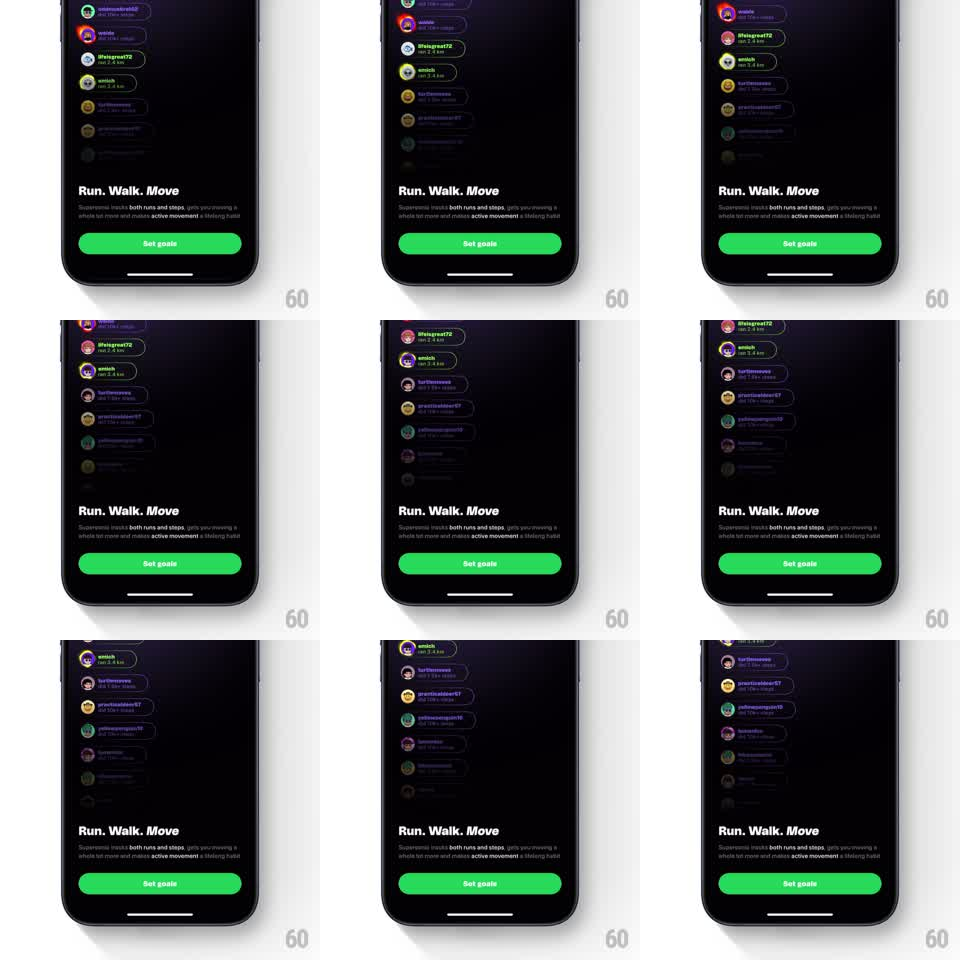

Media
Frame-by-frame

Rebuild this animation 1:1: Supersonic's goals intro - a dark onboarding screen where a vertical ticker of friends' activity ("ran 2.8 km") auto-scrolls behind a gradient, over a "Run. Walk. Move" headline and a green Set goals button.

Rebuild this animation 1:1: Supersonic's goals intro - a dark onboarding screen where a vertical ticker of friends' activity ("ran 2.8 km") auto-scrolls behind a gradient, over a "Run. Walk. Move" headline and a green Set goals button.
## Integration
Integration: stack-agnostic spec - springs given as stiffness/damping, timed motions as duration + curve; map every value to your framework and animation library of choice.
## Scene
Near-black screen. Upper two-thirds: a live-looking column of social activity rows - avatar, username, and a run stat ("ran 2.8 km") - scrolling upward. Lower third: bold white headline "Run. Walk. Move", supporting copy with "active movement" highlighted green, and a full-width green "Set goals" pill.
## Motion spec
Pattern: infinite social ticker behind a content gradient.
- The activity column scrolls upward continuously (~30px/s, linear), wrapping seamlessly; rows entering from the bottom fade in over ~200px, rows near the top dissolve into darkness.
- A gradient overlay (transparent to solid background) covers the column's lower half so the ticker melts behind the headline block.
- Rows are slightly tilted/staggered (alternating +-1deg) to feel like a living feed, not a spreadsheet.
- Headline, copy, and button fade up once on load (300ms, 80ms stagger) and then stay fixed - only the ticker moves.
- The button breathes with a subtle glow pulse (shadow opacity, 2.5s) to draw the first tap.
## Calibration
- Ticker speed is reading speed for the rows; too fast and it becomes texture, too slow and it looks stalled.
- The gradient must fully hide the seam where rows wrap.
## Reduced motion
Static feed of rows; no scroll.
## Don't miss
- Rows use real-looking mixed avatars and varied distances - uniformity breaks the social proof.
- The green of the highlight word matches the button exactly.